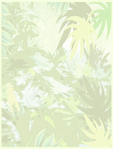

<link rel="import" href="../../bower_components/polymer/polymer.html">
<link rel="import" href="../../bower_components/iron-pages/iron-pages.html">
<script src="data.js"></script>
<title>MonsterMob</title>
<link href="tigereye.css" rel="stylesheet" type="text/css" />

<dom-module id="tigereye-card">

    <template>
        <style>
            .fit {position: absolute;}
        </style>
        <iron-pages selected="{{selected}}">
            <div class="card"></img>
            </div>
            <div class="card">
                <div class="head">
                    <div class="titel">{{data.type}}</div>
                </div>
                </img>
                <template is="dom-if" if="{{data.ver}}">
                    <div class="fit" style="left: 89px;"></div>
                </template>
                <template is="dom-if" if="{{data.hor}}">
                    <div class="fit" style="top: 50px;"></div>
                </template>

            </div>
        </iron-pages>


    </template>

    <script>
        Polymer({
            is: 'tigereye-card',
            properties: {
                data: Object,
                selected: {type: Number,
                    value: 0},
            },
            listeners: {
                'track': 'handleTrack',
                'tap': 'openCard',
            },
            regularTap: function (e) {
                console.log("Thank you for tapping");
            },
            attached: function () {
                console.log(this.data);
            },
            openCard: function (e) {
                this.selected = 1;
            },
            handleTrack: function (e) {
                switch (e.detail.state) {
                    case 'start':
                        console.log('Tracking started!');
                        break;
                    case 'track':
                        console.log('Tracking in progress... ');
                        break;
                    case 'end':
                        var target = e.detail.hover();
                        this.fire("dropCard", this.data, {node: target});
                        break;
                }
            }
        });
    </script>

</dom-module>